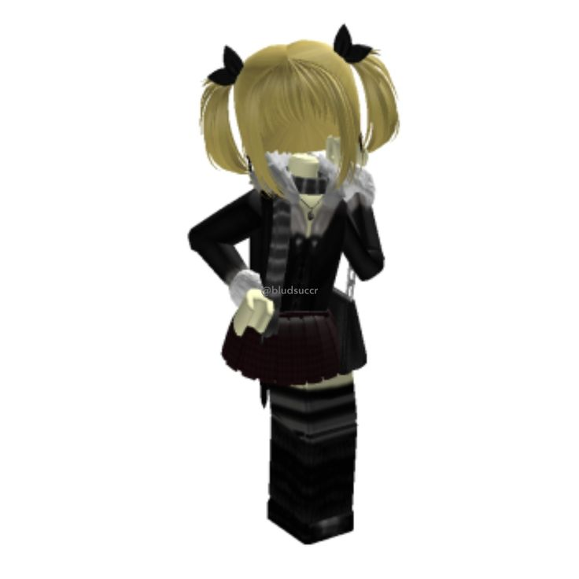

<!DOCTYPE html>
<html lang="en">
<head>
    <meta charset="UTF-8">
    <meta name="viewport" content="width=device-width, initial-scale=1.0">
    <title>Document</title>
</head>
<body>
    
</body>
</html>
<!DOCTYPE html>
<html lang="pt-BR">
<head>
    <meta charset="UTF-8">
    <meta name="viewport" content="width=device-width, initial-scale=1.0">
    <title>Evade Wiki - Perfil Soy_Ka00</title>
    <link rel="stylesheet" href="style.css">
</head>
<body>

    <header>
        <div class="header-container">
            <h1>EVADE <span class="subtitle">Roblox Fanpage</span></h1>
            <nav>
                <a href="#sobre">Sobre</a>
                <a href="#mecanicas">Mecânicas</a>
                <a href="#nextbots">Nextbots</a>
                <a href="#player-profile">Jogador</a>
            </nav>
        </div>
    </header>

    <main class="main-container">
        
        <section id="sobre" class="card">
            <h2>O que é o Evade?</h2>
            <p><strong>Evade</strong> é um dos jogos de sobrevivência mais populares do Roblox. Inspirado nos clássicos mapas de <em>Garry's Mod</em>, o objetivo principal é correr, se esconder e sobreviver contra os temidos <strong>Nextbots</strong> — imagens ou memes bidimensionais que perseguem os jogadores pelo mapa emitindo sons bizarros e áudios estourados.</p>
        </section>

        <section id="mecanicas" class="card">
            <h2>Mecânicas Principais</h2>
            <ul>
                <li><strong>Movimentação Avançada:</strong> O jogo exige que você domine o <em>bashing</em> (correr e deitar) para ganhar velocidade e escapar em alta velocidade.</li>
                <li><strong>Reviver Aliados:</strong> Quando um Nextbot te pega, você fica caído. Outros jogadores roxos ou aliados podem te carregar e reviver.</li>
                <li><strong>Equipamentos e Utilidades:</strong> Na loja, você pode comprar barreiras, radares, lanternas e rádio para sobreviver por mais tempo.</li>
            </ul>
        </section>

        <!-- Perfil do jogador com imagem local -->
        <section id="player-profile" class="card profile-card">
            <div class="profile-content">

                <div class="avatar-box">
                    <!-- Imagem substituída -->
                    
                </div>

                <div class="profile-text">
                    <h2>Jogador em Destaque</h2>
                    <span class="username">@Soy_Ka00</span>
                    <p class="badge">Sobrevivente Elite do Evade</p>
                    <p class="desc">Atualmente equipado com a skin temática da <strong>Misa</strong>. Conhecido por dar os melhores dribles nos Nextbots e reviver o time inteiro no escuro.</p>
                    <a href="https://www.roblox.com/users/3363363380/profile" target="_blank" class="roblox-btn">Ver Perfil no Roblox</a>
                </div>

            </div>
        </section>

        <section id="nextbots" class="card">
            <h2>Nextbots Mais Perigosos</h2>
            <div class="nextbot-grid">
                <div class="nextbot-item">
                    <span class="emoji">😡</span>
                    <h3>Angry Muncie</h3>
                </div>
                <div class="nextbot-item">
                    <span class="emoji">🤡</span>
                    <h3>Obunga</h3>
                </div>
                <div class="nextbot-item">
                    <span class="emoji">👁️</span>
                    <h3>Sanic</h3>
                </div>
            </div>
        </section>
    </main>

    <footer>
        <p>Evade Wiki &copy; 2026 - Desenvolvido para Soy_Ka00</p>
    </footer>

</body>
</html>